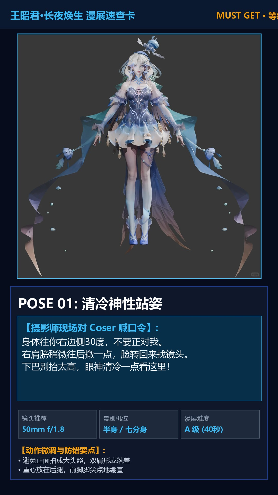
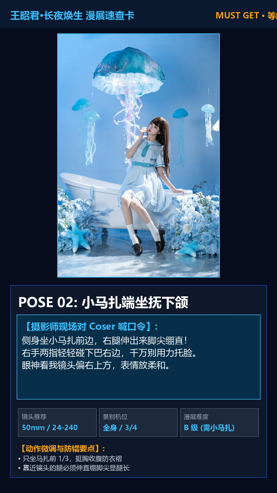
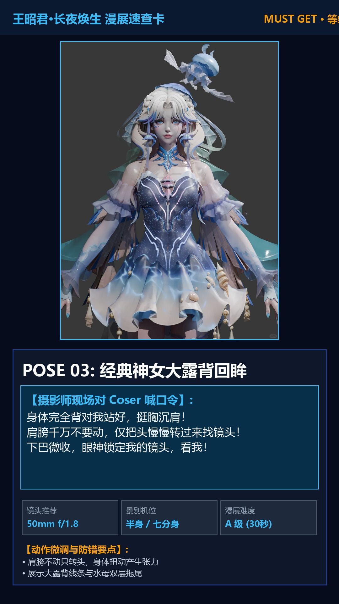
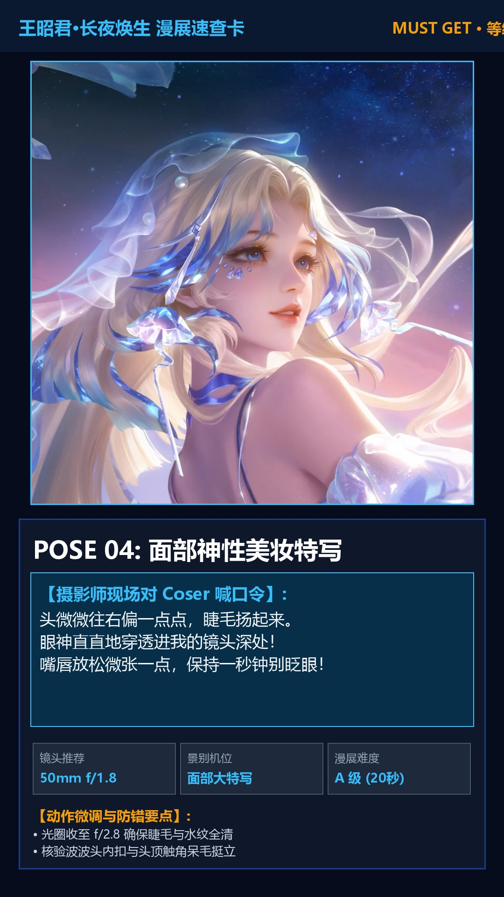
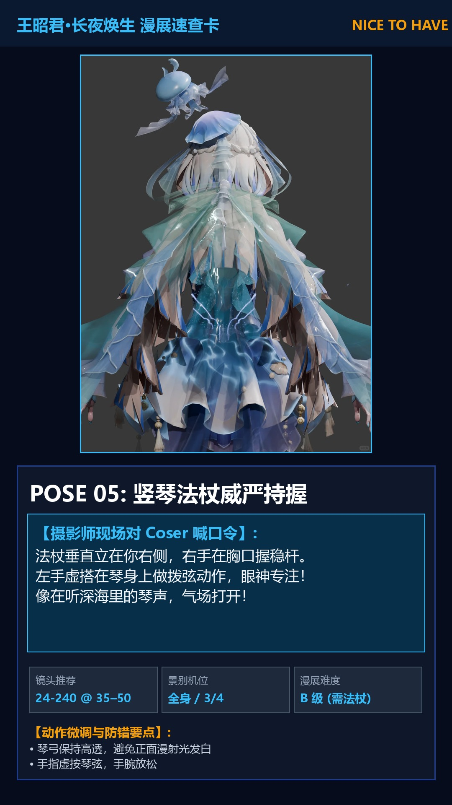
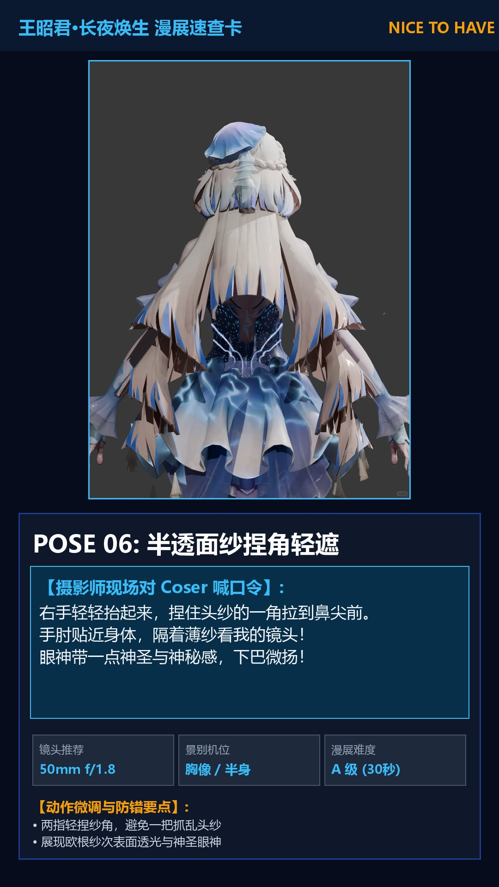
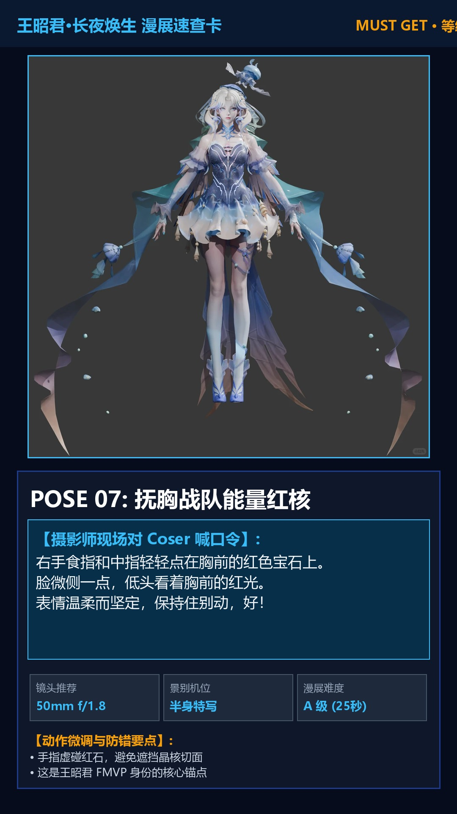
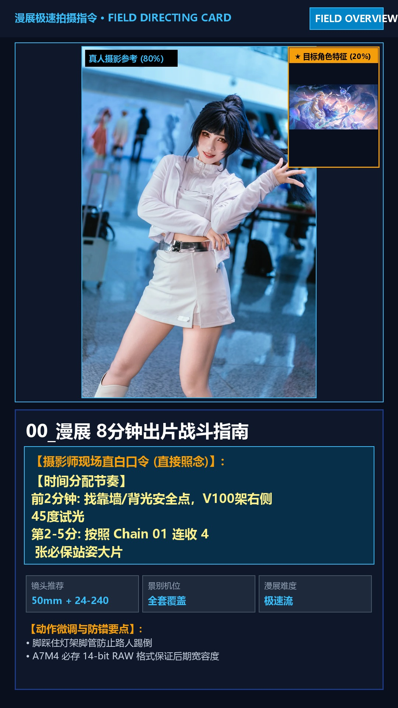

Sony A7M4 + Godox V100 + 50/1.8 + 24-240mm + 小马扎
以下卡片均已在 field_pack/phone_album/ 生成 1080×1920 高清大图，可以直接拷贝到手机相册中，现场直接展示给 Coser 引导动作。








🔴 MUST GET 必保镜头 (前 5 分钟必须全部拿下):
🟡 NICE TO HAVE 进阶出彩镜头 (自带道具/马扎时执行):
🟢 ONLY IF CONDITIONS ALLOW 条件允许挑战:
基础站位: 身体右侧微侧30度，重心在后腿，前脚尖虚点地。
基础站位: 侧身坐马扎前1/3，靠近镜头腿前伸绷直脚尖。
基础站位: 完全背对摄影师，向右转15度。